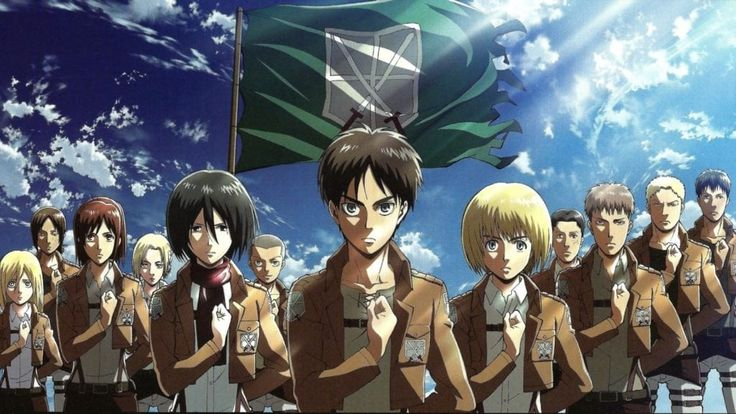

 Num mundo cercado por muralhas gigantes que protegem a humanidade de monstros devoradores conhecidos como Titãs, o jovem Eren Yeager jura vingança após um ataque devastador que destrói sua cidade e despedaça sua vida. Junto com seus amigos, Eren se junta à luta militar desesperada contra os Titãs, descobrindo segredos sombrios que poderiam mudar o destino da humanidade. SAIBA MAIS
Data do primeiro episódio: O primeiro episódio de "Attack on Titan" (também
conhecido como "Shingeki
no
Kyojin") foi ao ar em 6 de abril de 2013.
Rede inglesa: "Attack on Titan" foi exibido na televisão inglesa pelo serviço de
streaming
Crunchyroll.
Adaptado de: "Attack on Titan" é uma adaptação do mangá japonês de mesmo nome,
escrito e ilustrado
por
Hajime Isayama. A série de anime segue de perto a história do mangá.
Rede original: O anime "Attack on Titan" foi originalmente exibido no Japão na rede
de televisão MBS
(Mainichi Broadcasting System) e em outras redes afiliadas, como a Tokyo MX.

A Crunchyroll divulgou nesta quarta-feira (9) os vencedores de cada categoria do seu Anime Awards 2022. Os destaques ficaram para Attack on Titan, que venceu como anime do ano, e Demon Slayer, eleito a melhor animação de 2021. SAIBA MAIS
Attack on Titan se tornou um dos animes mais comentados nos últimos anos devido ao seu teor dramático e muito frio quanto à vida dos personagens, visto que nenhum deles está realmente seguro. SAIBA MAIS

Após mais de 10 anos acompanhando Eren, Mikasa, Armin e outros personagens cativantes de Attack on Titan (Shingeki no Kyojin no original), o anime chegou ao seu episódio final no dia 4 de novembro deste ano. A boa notícia é que a produção deixou um gostinho de continuação! SAIBA MAIS

Em postagem compartilhada nas redes sociais, o perfil oficial de Attack on Titan confirmou que a abertura "The Rumbling", introdução oficial da temporada final, ultrapassou a marca de 10 milhões de visualizações no YouTube, tornando-se um dos vídeos mais assistidos de 2022 até o momento. SAIBA MAIS